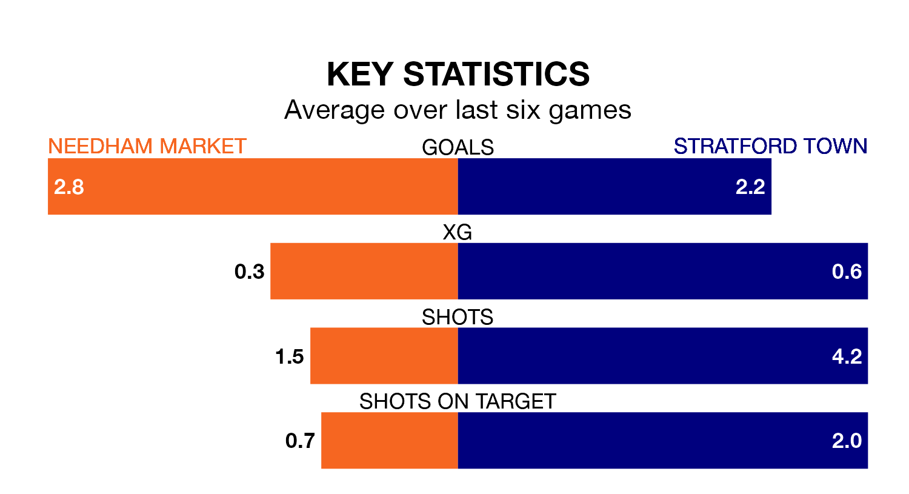

Stratford Town visit Needham Market at Bloomfields on late Tuesday on the back of four consecutive wins in the Southern League Premier Central.
Stratford have picked up 13 points from their last six games, and they face a Needham Market side who have also won their last three matches, and collected 15 points from the last possible 18.
Needham Market are top of the table after 27 games, of which they have won 18 and drawn five, earning 59 points.
Stratford are four places behind the home side in fifth, with 16 wins and four draws putting them on 52 points.
With 56 goals in 27 games so far this season, Needham Market are scoring more than average in the league with 2.1 goals per game. And they are conceding fewer than average, letting in 21 goals at a rate of 0.8 per game.
Town are also above average scorers, with 1.9 goals per game, compared to a league average of 1.5. They have conceded 1.5 goals per game.
In the last 10 years, Needham Market and Stratford have played each other on 10 occasions. They won five each.
On average, Needham Market scored 1.9 goals and Town 2.2 in those matches.
Their last meeting was on August 5, when Stratford won 6-1 at home.
Needham Market's last match was on February 13, a 5-0 win against Leiston.
Stratford beat Hitchin Town 4-3 last time out, on February 10.
Updated: 12:06 (UTC), 15/02/24